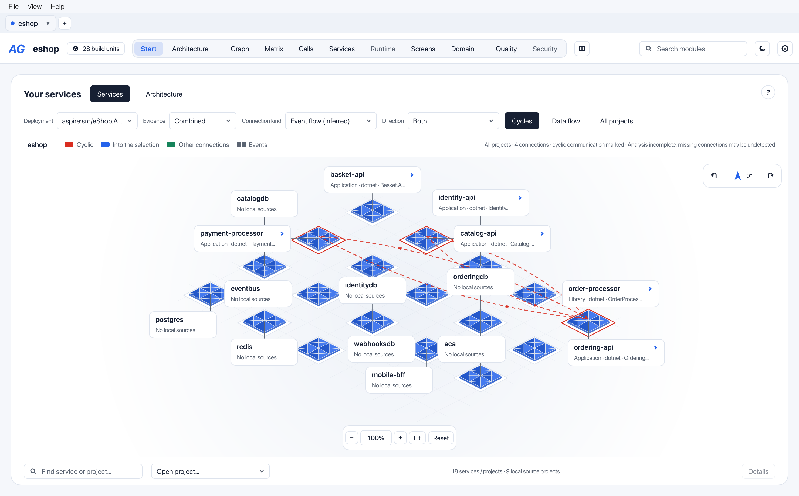

Deployment-Belege lesen
Erkenne Services aus Compose, Kubernetes und unterstützten Terraform-Ressourcen. Helm und Kustomize werden nur nach ausdrücklicher Aktivierung mit lokal installierten Werkzeugen gerendert.
Erkenne Kopplung über Service- und Datenbankgrenzen. ArchGuard analysiert Deployment-Konfiguration und Quellcode, um gemeinsame Infrastruktur, Datenzugriffe und Abhängigkeiten zu untersuchen.
Fehlende Evidenz ist nicht null. Sieh, was gemessen wurde, was abgeleitet ist und was unbekannt bleibt.
Erkenne Services aus Compose, Kubernetes und unterstützten Terraform-Ressourcen. Helm und Kustomize werden nur nach ausdrücklicher Aktivierung mit lokal installierten Werkzeugen gerendert.
Verfolge konfigurierte Datenbankverbindungen und Tabellendeklarationen aus unterstützten ORM- und Migrationsmustern. Prüfe die Begründung für Shared Server, Shared Database und Shared Table.
Vergleiche konfigurierte Verbindungen und aus Quellen abgeleitete Beziehungen mit importierten OpenTelemetry-Traces. Ein fehlender Trace macht eine deklarierte Beziehung nicht zu einem gemessenen Aufruf.
Untersuche asynchrone Service-Kopplung am Beispiel Microsoft eShop. Verfolge Publisher und Subscriber bis zu ihren Quellstellen und bewerte, welche Integrationspunkte eine Änderung am Service betrifft. Die Beziehungen werden statisch ermittelt; Laufzeitmessungen ergänzen die Analyse.

Microsoft eShop · Statisch hergeleitete Event-Beziehungen. Zur versionierten eShop-Anleitung (EN)
Führe den Befehl nach der Installation von ArchGuard im Stammverzeichnis des ArchGuard-Repositories aus. Service Shop enthält getrennte Compose-Stacks. Die JSON-Ausgabe enthält die Service-Beziehungen und ihre Belege; Container werden nicht gestartet.
Zur Anleitung für Service-Belege (EN)archguard services examples/service-shop --format jsonArchGuard liest unterstützte Quell- und Konfigurationsmuster, keinen Live-Cluster-Zustand. Terraform wird nicht ausgeführt; State- und Variablendateien werden nicht gelesen. Secrets bleiben unbekannt. Helm und Kustomize benötigen eine ausdrückliche Aktivierung. Dynamische Endpunkte und nicht unterstützte Ressourcen bleiben Lücken. Ein konfigurierter Datastore beweist keine Laufzeitnutzung.